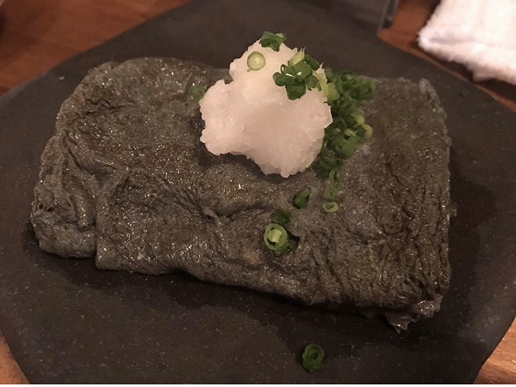

おすすめの出汁巻き玉子3選
飲みにいくときや、食事をするとき、メニューにあったら必ず頼んでしまう一品ありませんか？
私がついつい頼んでしまう一品は・・・出汁巻き玉子です！
この記事では私のおすすめの出汁巻き玉子3選をご紹介いたします。
目次
- はまぐり屋串左衛門 / 中目黒
- 呑喰処山や / 逗子
- 本家あべや / 東京駅
- @dashimakigram
はまぐり屋串左衛門 / 中目黒
一番最初にご紹介させていただくのは、
私が今まで食べた中でもっとも好きな出汁巻き玉子です。
はまぐり出汁で巻く玉子焼きは、優しくフワフワで、何個でも食べられちゃいます。
私が今まで食べた中でもっとも好きな出汁巻き玉子です。
はまぐり出汁で巻く玉子焼きは、優しくフワフワで、何個でも食べられちゃいます。
もちろん出汁巻き玉子だけでなく、ハマグリも絶品！
ストップの声が掛かるまで、わんこスタイルでハマグリを食べられるスタイルです。
味付けもさまざまで、何個でもいけちゃいます。
また1人10個食べると、ドリンク一杯無料になるサービスもあります。
ストップの声が掛かるまで、わんこスタイルでハマグリを食べられるスタイルです。
味付けもさまざまで、何個でもいけちゃいます。
また1人10個食べると、ドリンク一杯無料になるサービスもあります。
基本情報
- はまぐり屋 串左衛門
- 〒153-0051 東京都目黒区上目黒3-9-5 プラージュ目黒1F
- 月～日18:00～翌3:00（L.O.2:30）
- 中目黒駅[正面出口]から徒歩約2分
- 詳細はこちら
呑喰処山や / 逗子
今まで食べた中で一番ビジュアルに驚いた出汁巻き玉子です。
イカスミを使用しているため、黒くなっています。
イカスミを使用しているため、黒くなっています。
店内は古民家をリノベーションした落ち着いた和風テイストになっています。
お酒は日本酒、焼酎、サワーハイボールなど、
炭火鉄板焼き料理にあったものをペアリングしてくれます。
お酒は日本酒、焼酎、サワーハイボールなど、
炭火鉄板焼き料理にあったものをペアリングしてくれます。
基本情報
- 喰呑処 山や
- 〒249-0006 神奈川県逗子市逗子7-1-2
- 月～日 17:00～24:00（L.O.23:00）
- ＪＲ横須賀線 逗子駅 徒歩4分 / 京急逗子線 新逗子駅 徒歩4分
- 詳細はこちら
本家あべや / 東京駅
秋田比内地鶏生産責任者の店の出し巻き玉子です。
比内地鶏を使用した出汁巻き玉子、美味しくないわけありません。
ふるふるの食感で、玉子の味が濃いです。
比内地鶏を使用した出汁巻き玉子、美味しくないわけありません。
ふるふるの食感で、玉子の味が濃いです。
テレビや雑誌で取材殺到のあべや看板料理「比内地鶏 親子丼」。
皮面を香ばしく焼き上げた鶏肉、卵、出汁、
すべて比内地鶏を使用したあべやの名物料理は最高の一品です。
皮面を香ばしく焼き上げた鶏肉、卵、出汁、
すべて比内地鶏を使用したあべやの名物料理は最高の一品です。
基本情報
- 本家あべや 東京駅北町ダイニング店
- 〒100-0005 東京都千代田区丸の内1-9-1 東京駅八重洲北口2F
- 月～金11:00～23:00（L.O.22:00）
- 東京駅八重洲北口直結
- 詳細はこちら
@dashimakigram
instagramで食べた出汁巻き玉子を随時更新しています！